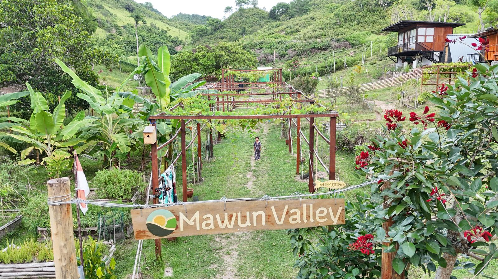

🏄 Surf + Farm
Lombok Permaculture Experience: Hands-on Farming (Beachside)
Balance farm life with world-class waves — just 5 minutes from the beach.
Private cabin
Breakfast & Lunch
3 hrs/day, 4 days/week
From US$19/day
🌿 The Experience
Embark on a unique, hands-on learning experience at Mawun Valley Farm, nestled in the heart of Lombok's stunning natural beauty. Gain practical skills in permaculture and sustainable agriculture. With Lombok's best surfing beaches just 5 minutes away!
🤝 What You Offer
- Painting & Decorating: Help with property facilities
- Animal Care: Look after farm animals
- Farming: Plant crops, sow seeds, outside tasks
- Gardening: Grow plants and cultivate gardens
🎁 What You Get
Private Room
Cozy cabin
Breakfast & Lunch
Farm-fresh meals
Bikes
Free to use
Permaculture Course
Free training
Certificate
Upon completion
Workspace
Remote work
👤 Who We're Looking For
- Passionate about sustainable living
- Interest in surfing or beach life
- Open-minded, willing to learn
- Team players with good communication